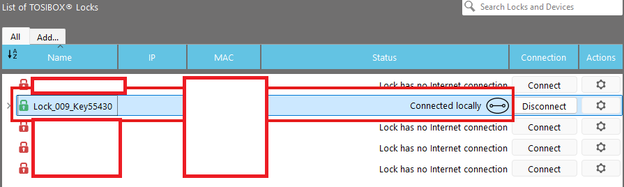
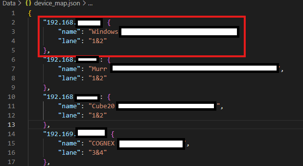

How To Use the Device Dashboard
-
Log into your Tosibox Key and connect to ONE Tosibox key.
Open the Tosibox application and ensure you are connected to only one key at a time. This ensures the dashboard can properly detect available devices.
Example Tosibox dashboard:

-
Go to the dashboard website.
Once connected, open this dashboard in your browser. You will see a list of devices grouped by lane.
Click on any device name to open that device’s web interface in a new tab.
-
If devices are missing (but visible in Tosibox), update
DATA/device_map.json.
If you see a device in Tosibox but not on the dashboard, you need to add it to the device_map.json file.
- Open
DATA/device_map.json in a text editor.
- Add a new entry for the device using the same structure as the other devices.
Example JSON structure:

Questions or suggestions? Please open an issue or pull request on the project's repository.